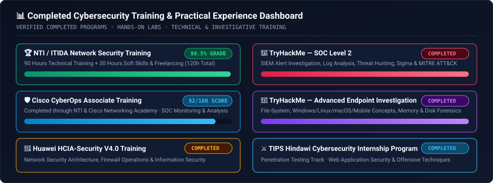
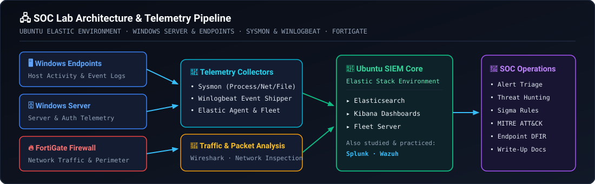
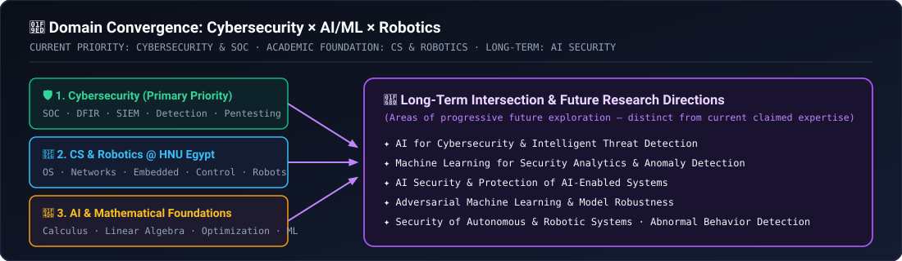

I am an undergraduate student in Computer Science and Information Technology at HNU in Egypt, specializing in Robotics. My academic background combines computer science, robotics, intelligent systems, automation, and artificial intelligence.
Mathematical modeling, pattern analysis, and feature representation
👁️ Vision, Language & Speech
Computer Vision, Natural Language Processing (NLP), Speech Processing
Sensor/signal interpretation and unstructured data analysis
💻 Core Computer Science
Algorithms and problem-solving, Operating Systems, Parallel Processing
Process/memory internals, execution logic, and OS forensic foundations
⚙️ Hardware & Embedded Systems
Computer Architecture and Microprocessors, Embedded Systems and Real-Time Systems
Low-level hardware behavior, microprocessors, and real-time constraints
🌐 Networking & Security
Computer Networks and Information Security
Protocol analysis, packet flow, and network/information security
🤖 Robotics & Control
Robotics, Robot Arms, Mobile Robots, Sensors, and Actuators, Automatic Control, Virtual Reality
Cyber-physical systems, feedback loops, sensor telemetry, and actuation
I am interested in understanding how these subjects connect to one another, especially how robotics, intelligent systems, AI, and cybersecurity can complement each other.
02
🛡️ Cybersecurity Focus
Primary Professional Direction
Cybersecurity is my primary professional direction. I am developing practical skills through structured training, hands-on labs, technical projects, and independent investigation.
Monitor telemetry, triage alerts, and investigate security incidents
🌐 Network & OS Security
Network Security and Traffic Analysis · Windows Security, Sysmon, and Linux
Inspect network traffic and analyze host-level Windows & Linux events
🔬 Threat Hunting, IR & DFIR
Threat Hunting and Incident Response · Digital Forensics and Endpoint Investigation
Proactively hunt threats, reconstruct timelines, and examine forensic artifacts
⚙️ Detection & Threat Intel
Detection Engineering and security monitoring · Threat intelligence and adversary behavior
Translate adversary behavior and telemetry into actionable detections
⚔️ Offensive & Red Team Basics
Web Application Security and Penetration Testing · Red Team fundamentals and offensive security techniques
Understand how attacks work to improve defensive detection & response
I am particularly interested in connecting offensive security knowledge with defensive security operations, allowing me to understand both attacker techniques and how defenders can detect and investigate them.
03
🏆 Cybersecurity Training and Practical Experience
Completed Programs & Practical DFIR/SOC

#
Program / Training
Provider / Platform
Details & Curriculum Scope
Outcome / Grade
01
NTI/ITIDA Network Security Training
NTI / ITIDA
90 hours of technical training + 30 hours of soft skills & freelancing training (120h total)
99.5% Final Grade
02
Cisco CyberOps Associate Training
NTI & Cisco Networking Academy
Security operations, SIEM monitoring, network traffic analysis, and incident response
92 / 100 Score
03
Huawei HCIA-Security V4.0 Training
Huawei
Network security architecture, firewall operations, and information security
File-system analysis, Windows & Linux investigations, macOS & mobile concepts, memory forensics, disk-image analysis
Completed
06
TIPS Hindawi Cybersecurity Internship Program
TIPS Hindawi
Penetration Testing track — Web security and offensive testing techniques
Completed
Practical Experience Area
Technical Skills & Concepts Practiced
📡 Core Practical Learning
Security monitoring, packet and traffic analysis, threat hunting, incident investigation, endpoint forensics, web security, and adversary techniques
🔬 Advanced Endpoint Investigation
File-system analysis, Windows and Linux investigations, macOS and mobile investigation concepts, memory forensics, disk-image analysis, and underlying technical concepts beyond simply using security tools
⚙️ Detection Engineering & Telemetry
Detection engineering, Windows event analysis, Sigma rules, MITRE ATT&CK, and the relationship between telemetry, attacker behavior, and security alerts
04
🧰 Tools, Platforms, and Labs
Hands-On Lab & Tooling Stack
I have worked with or studied the following tools, platforms, and frameworks through training and practical exercises:
Elastic Agent, Fleet & Fleet Server · Sysmon · Winlogbeat
Host telemetry collection, centralized agent management, and granular Windows event forwarding
🦈 Network & Traffic Security
Wireshark · FortiGate · Cisco Packet Tracer
Packet/traffic analysis, firewall policy configuration, and network topology simulation
⚔️ Offensive Security & Testing
Burp Suite · Nmap · Kali Linux
Web application security testing, network reconnaissance, and offensive security labs
📐 Detection Frameworks
Sigma Rules · MITRE ATT&CK
Detection rule authoring and adversary behavior mapping
🖥️ Operating Systems & Labs
Windows · Windows Server · Linux environments (Ubuntu) · TryHackMe
Enterprise lab administration, host forensics, and structured investigative rooms

INTERACTIVE SOC LAB NODE INSPECTOR (CLICK A COMPONENT)
Ubuntu-based Elastic Environment: Central SIEM server running Elasticsearch and Kibana alongside Elastic Agent, Fleet, and Fleet Server to ingest, parse, and analyze host and network security telemetry across the lab.
05
🧠 Artificial Intelligence and Machine Learning
Progressive Math & Algorithmic Foundations
Alongside cybersecurity, I am studying AI-related subjects at university and want to develop a strong understanding of the mathematical and algorithmic foundations behind intelligent systems.
Foundation Layer
Topics & Areas of Interest
First-Principles Focus
📐 Mathematical Core
Calculus and linear algebra for machine learning · Optimization and gradient descent
How derivatives contribute to gradient descent and how optimization algorithms minimize loss functions
📊 Classical Machine Learning
Machine Learning · Regression and predictive modeling · Classification and model evaluation · Pattern Recognition
How regression models learn from data and how classification models are evaluated
🕸️ Deep Learning & Autonomy
Artificial Intelligence · Deep Learning · Neural Networks · Computer Vision · Natural Language Processing · Intelligent & autonomous systems
How neural networks learn representations and the assumptions behind each architecture
I do not want to treat AI as simply a collection of libraries or ready-made models. I am building my foundations progressively, beginning with the necessary mathematics and core machine-learning concepts before moving toward more advanced deep-learning topics. My current goal is to develop genuine conceptual understanding rather than prematurely claim expertise in machine learning or deep learning.
06
🔗 The Intersection of AI, Robotics, and Cybersecurity
Long-Term Exploration

Long-Term Exploration Area
Technical Scope
Status
AI for Cybersecurity
Applying intelligent analytical techniques to defensive security operations
Future Exploration
ML for Security Analytics & Anomaly Detection
Detecting abnormal patterns across network and host telemetry
Future Exploration
Intelligent Threat Detection & Investigation
Supporting alert triage, correlation, and incident investigation
Future Exploration
AI Security & Protection of AI-Enabled Systems
Securing ML pipelines, models, and deployed intelligent systems
Future Exploration
Adversarial Machine Learning
Investigating how attackers manipulate, evade, or poison ML models
Future Exploration
Security of Autonomous & Robotic Systems
Protecting robotic controllers, sensors, actuators, and autonomous platforms
Future Exploration
Abnormal Behavior Detection in Complex Systems
Combining control systems knowledge with security telemetry analysis
Future Exploration
These are areas I want to investigate and develop toward over time, rather than fields in which I currently claim professional expertise.
07
📝 Projects and Technical Documentation
Portfolio Methodology
I am developing a technical portfolio centered on practical learning, reproducible experiments, and clear documentation. My GitHub portfolio is intended to include:
My goal is not simply to publish answers or flags. I want my documentation to explain the investigation process, the reasoning behind each step, the evidence observed, the tools used, and the lessons learned.
SOC Analyst, SOC Engineer, Security Operations, Network Security, Threat Hunting, Incident Response, Digital Forensics, Detection Engineering, Security Engineering, Penetration Testing & Red Team fundamentals
Ongoing Foundations
Undergraduate CS, IT & Robotics coursework at HNU; mathematical and algorithmic foundations of AI/ML (calculus, linear algebra, optimization, regression, classification, neural networks)
Long-Term Exploration
AI Security, adversarial ML, ML for security analytics/anomaly detection, and security of autonomous & robotic systems
09
📚 Learning Style and Expectations
Methodology
✅ What I Value
❌ What I Avoid
✔️ Step-by-step explanations with practical examples
✖️ Exaggerated claims about skill level or shortcuts
✔️ The underlying logic, mathematics, or system behavior
✖️ Unnecessary motivational language or filler
✔️ Clear explanations of commands, tools, parameters, and outputs
✖️ Superficial explanations that make a subject appear easier than it is
✔️ Realistic lab exercises and troubleshooting
✖️ Blindly following instructions without understanding why
✔️ Connections between theory and practical implementation
✖️ Rushing into advanced topics before building prerequisites
✔️ Honest feedback about mistakes, knowledge gaps, and skill level
✖️ Treating AI/ML as black-box libraries without math foundations
✔️ Structured roadmaps built progressively on prerequisites
✖️ Publishing answers/flags without investigative reasoning
10
🤖 How an AI Assistant Should Work With Me
10 Operating Rules
01Consider my combined background in Computer Science, Robotics, AI, and Cybersecurity.
02Treat cybersecurity as my current primary professional direction, while recognizing AI and robotics as important academic and long-term interests.
03Distinguish completed certifications and training from ongoing studies and future plans.
04Explain technical concepts precisely and progressively, without assuming expertise I have not established.
05For cybersecurity labs, prioritize authorized environments, evidence-based investigation, clear reasoning, and accurate documentation.
06For machine learning and AI, explain the underlying mathematics, algorithms, assumptions, and limitations where relevant.
07For projects and GitHub write-ups, prioritize clarity, technical accuracy, reproducibility, and genuine learning outcomes.
08For career advice, evaluate opportunities realistically against my undergraduate status, actual experience, current skills, and eligibility requirements.
09Avoid inventing qualifications, professional experience, completed courses, or technical abilities.
10Help me connect concepts across cybersecurity, AI, robotics, networking, operating systems, and intelligent systems whenever those connections are relevant.
Overall Objective: My overall objective is to become a technically strong cybersecurity professional with a solid computer science and robotics foundation, while progressively developing the mathematical and machine-learning knowledge needed to explore AI Security in the future.